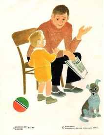
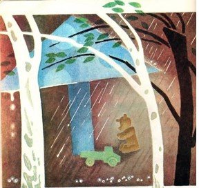
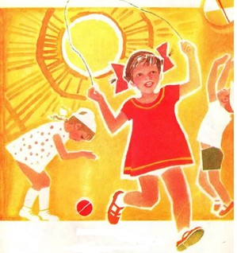
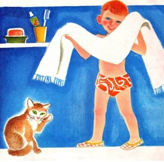
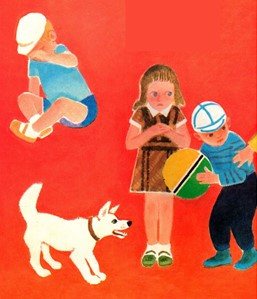

Что такое хорошо и что такое плохо?

Крошка-сын
к отцу пришел,
и спросила кроха:
- Что такое
хорошо
и что такое
плохо?

У меня
секретов нет, -
слушайте детишки, -
папы этого
ответ
помещаю
в книжке.

- Если ветер
крыши рвет,
если
град загрохал, -
каждый знает -
это вот
для прогулок
плохо.

Дождь покапал
и прошел.
Солнце
в целом свете.
Это
очень хорошо
и большим
и детям.

Если
сын
чернее ночи,
грязь лежит
на рожице, -
ясно,
это
плохо очень
для ребячьей
кожицы.

Если
мальчик
любит мыло
и зубной порошок,
этот мальчик
очень милый,
поступает хорошо.

Если бьет
дрянной драчун
слабого мальчишку,
я такого
не хочу
даже
вставить в книжку.